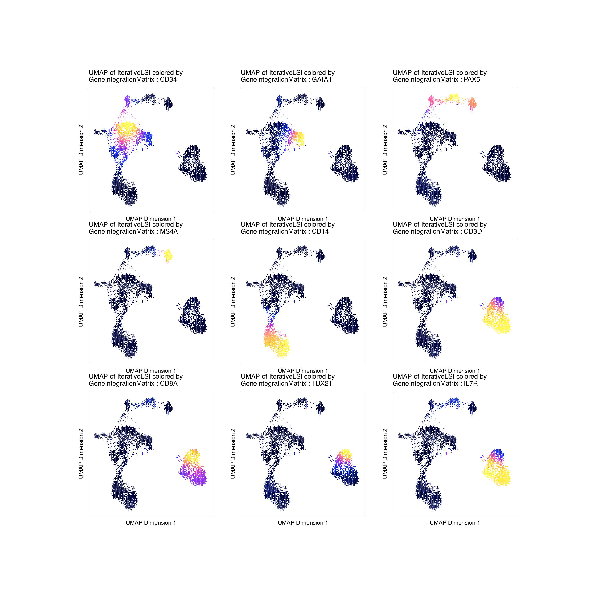
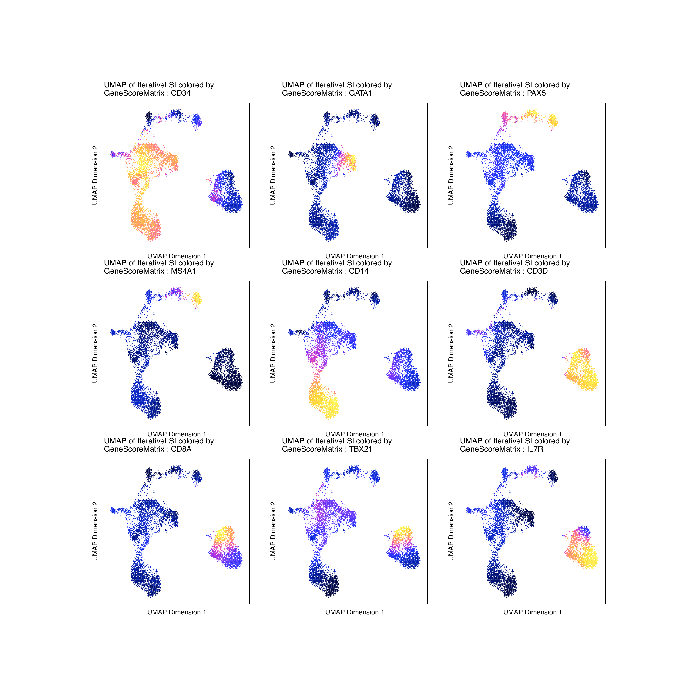

8.2 Adding Pseudo-scRNA profiles for each scATAC cell
First we need to download scRNA data for hematopoiesis from Granja* et al (2019).
#259 MB Download
if(!file.exists("scRNA-Healthy-Hematopoiesis-191120.rds")){
download.file(
url = "https://jeffgranja.s3.amazonaws.com/MPAL-10x/Supplementary_Data/Healthy-Data/scRNA-Healthy-Hematopoiesis-191120.rds",
destfile = "scRNA-Healthy-Hematopoiesis-191120.rds"
)
}
seRNA <- readRDS("scRNA-Healthy-Hematopoiesis-191120.rds")
seRNA
# class: RangedSummarizedExperiment
# dim: 20287 35582
# metadata(6): variableGenes optimizeLSI ... UMAP_Params colorMap
# assays(1): counts
# rownames(20287): FAM138A OR4F5 ... S100B PRMT2
# rowData names(3): gene_name gene_id exonLength
# colnames(35582): CD34_32_R5:AAACCTGAGTATCGAA-1
# CD34_32_R5:AAACCTGAGTCGTTTG-1 ...
# BMMC_10x_GREENLEAF_REP2:TTTGTTGCATGTGTCA-1
# BMMC_10x_GREENLEAF_REP2:TTTGTTGCATTGAAAG-1
# colData names(10): Group nUMI_pre ... BioClassification Barcode
colnames(colData(seRNA))
# [1] "Group" "nUMI_pre" "nUMI"
# [4] "nGene" "initialClusters" "UMAP1"
# [7] "UMAP2" "Clusters" "BioClassification"
# [10] "Barcode"
table(colData(seRNA)$BioClassification)
# 01_HSC 02_Early.Eryth 03_Late.Eryth 04_Early.Baso 05_CMP.LMPP
# 1425 1653 446 111 2260
# 06_CLP.1 07_GMP 08_GMP.Neut 09_pDC 10_cDC
# 903 2097 1050 544 325
# 11_CD14.Mono.1 12_CD14.Mono.2 13_CD16.Mono 14_Unk 15_CLP.2
# 1800 4222 292 520 377
# 16_Pre.B 17_B 18_Plasma 19_CD8.N 20_CD4.N1
# 710 1711 62 1521 2470
# 21_CD4.N2 22_CD4.M 23_CD8.EM 24_CD8.CM 25_NK
# 2364 3539 796 2080 2143
# 26_Unk
# 161 We can now save our original projHeme2 using saveArchRProject from ArchR.
Constrained Integration (recommended)
sampleList <- SimpleList(
scATAC_BMMC_R1 = grep("BMMC", colnames(seRNA), ignore.case = TRUE, value = TRUE),
scATAC_CD34_BMMC_R1 = grep("CD34", colnames(seRNA), ignore.case = TRUE, value = TRUE),
scATAC_PBMC_R1 = grep("PBMC", colnames(seRNA), ignore.case = TRUE, value = TRUE)
)
#To see size of each list element
lapply(sampleList, length)
# $scATAC_BMMC_R1
# [1] 12602
# $scATAC_CD34_BMMC_R1
# [1] 8176
# $scATAC_PBMC_R1
# [1] 14804
#~5 minutes
projHeme3 <- addGeneIntegrationMatrix(
ArchRProj = projHeme2,
seRNA = seRNA,
sampleList = sampleList,
addToArrow = TRUE, # We are going to add scRNA to each Arrow
groupBy = "BioClassification",
nameGroup = "predictedGroup",
nameScore = "predictedScore"
)What matrices are available?
Now lets see how this effects our marker gene scores overlayed on our 2-d embedding.
markerGenes <- c(
"CD34", #Early Progenitor
"GATA1", #Erythroid
"PAX5", "MS4A1", #B-Cell Trajectory
"CD14", #Monocytes
"CD3D", "CD8A", "TBX21", "IL7R" #TCells
)
p1 <- plotEmbedding(
ArchRProj = projHeme3,
colorBy = "GeneIntegrationMatrix",
name = markerGenes,
continuousSet = "horizonExtra",
embedding = "UMAP",
imputeWeights = getImputeWeights(projHeme3)
)
p2 <- plotEmbedding(
ArchRProj = projHeme3,
colorBy = "GeneScoreMatrix",
continuousSet = "horizonExtra",
name = markerGenes,
embedding = "UMAP",
imputeWeights = getImputeWeights(projHeme3)
)To plot all marker genes we can use cowplot
#Rearrange for grid plotting
p1c <- lapply(p1, function(x){
x + guides(color = FALSE, fill = FALSE) +
theme_ArchR(baseSize = 6.5) +
theme(plot.margin = unit(c(0, 0, 0, 0), "cm")) +
theme(
axis.text.x=element_blank(),
axis.ticks.x=element_blank(),
axis.text.y=element_blank(),
axis.ticks.y=element_blank()
)
})
#Rearrange for grid plotting
p2c <- lapply(p2, function(x){
x + guides(color = FALSE, fill = FALSE) +
theme_ArchR(baseSize = 6.5) +
theme(plot.margin = unit(c(0, 0, 0, 0), "cm")) +
theme(
axis.text.x=element_blank(),
axis.ticks.x=element_blank(),
axis.text.y=element_blank(),
axis.ticks.y=element_blank()
)
})
do.call(cowplot::plot_grid, c(list(ncol = 3), p1c))

To save a nice looking pdf we use plotPDF which removes white pages and tries to make the plots nice looking.